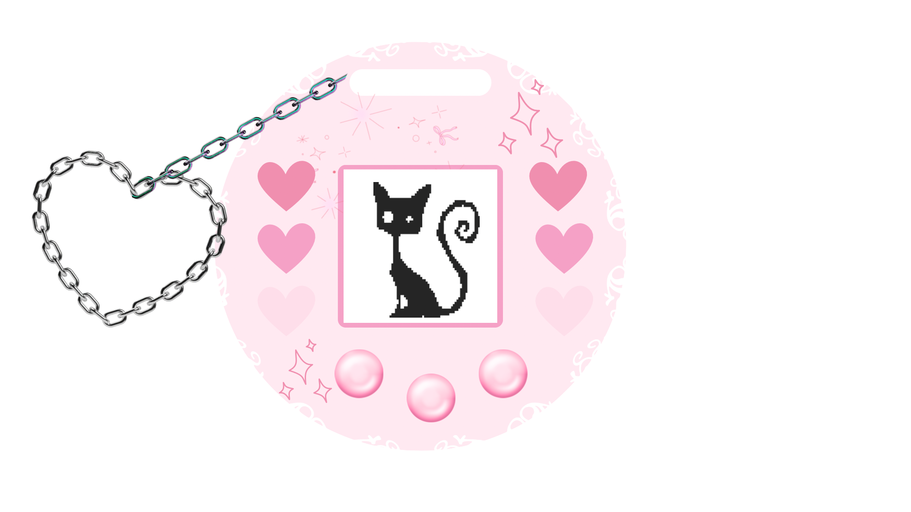
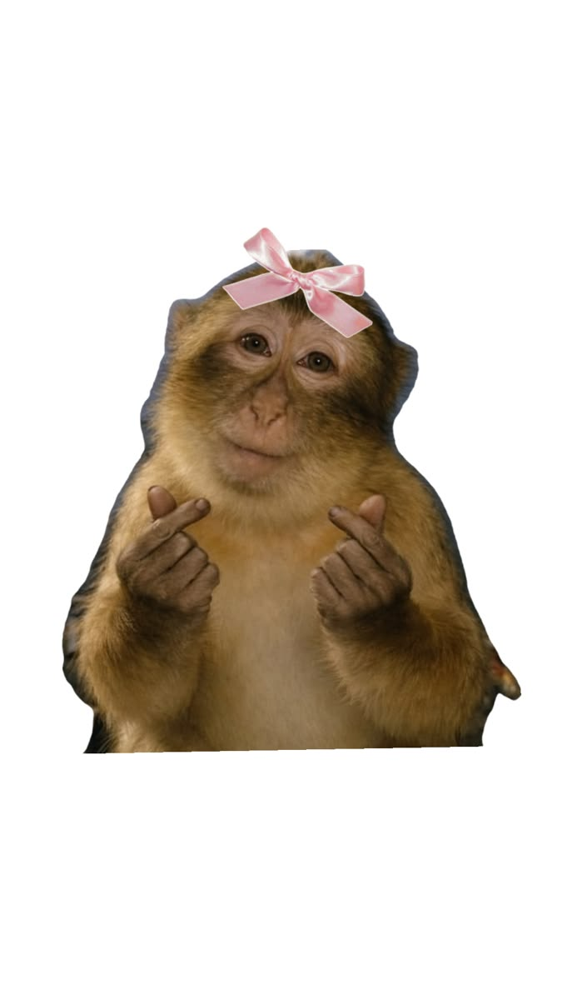

About Me
Hi! I’m Ginna ♡ I’m an aspiring front-end web developer who loves combining creativity with code. I enjoy creating colorful, interactive, and user-friendly websites using HTML, CSS, and JavaScript. I’m always learning new techniques and challenging myself with projects that help me grow as a developer. My favorite part of web development is taking an idea and watching it come to life on the screen.

Language Skills

Fun Facts About Me
- I still enjoy watching Winx Club.
- I am an ISFJ: Introverted, Sensing, Feeling, and Judging.
- I have a cat named Killua.
- I speak Spanish and English, and I am currently learning Mandarin.
Click Me to Take a Picture

Oh... wow... you actually came out alright